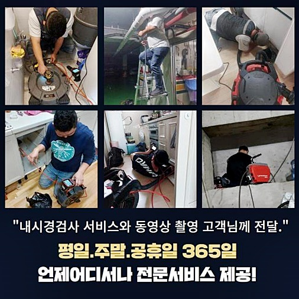
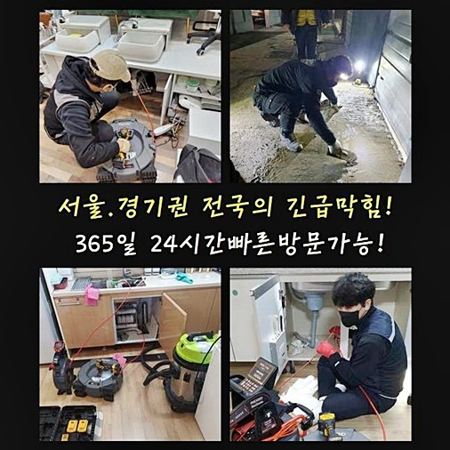
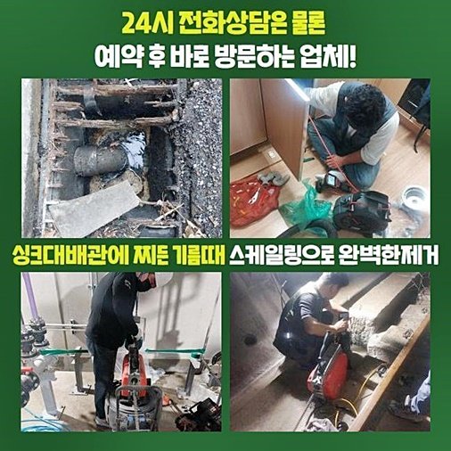
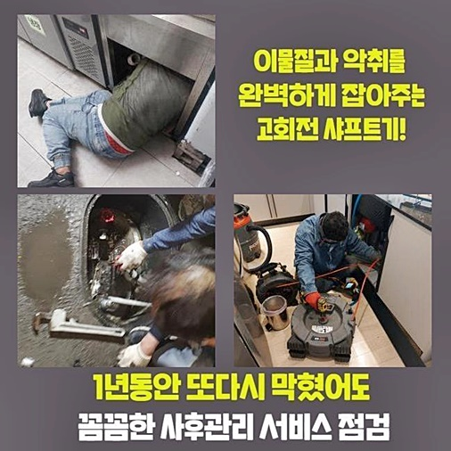
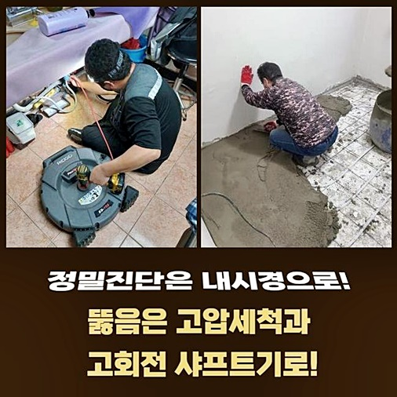
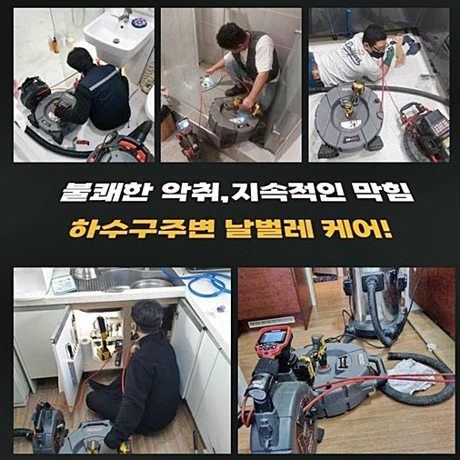

🏠 구리시 인창동하수구막힘 동구동 오수맨홀청소 출장수리
용인시 처인구 배관막힘 전문 시공 후기

📋 작업 개요
- 위치: 용인시 처인구, 수원시 영통구, 화성시 동탄
- 서비스 유형: 배관막힘, 누수수리, 고압세척
- 작업 일시:
- 업체명: 하수구수사대 (010-5615-2118)
🔍 문제 상황
구리시 인창동하수구막힘 동구동 오수맨홀청소 출장수리
반가워요 배수관 클리닝은 간단하게 약품을 넣는다고 소멸이 되기 어렵습니다
예측과 달리 까다롭고 성가신 상황이 많아 어떤 사유로 막힘이 일어난건지 동기를 면밀하게 검진하고 그에 적합한 계획을 세워서 공사하는 게 먼저이라고 말씀드릴 수 있습니다
일부분의 청소를 실시한 상황이라도 주변 장소에서 트러블이 발생해 얼마 지나지 않아서 수리를 맡겨야 될 수 있답니다
그렇기에 당장의 불편함만 없애는 방향으로 매듭짓지 마시고 타 지점도 전반적으로 진단해서 관 안에 머무는 침전물을 세척하여야 불편한 상황이 발생하지 않아요
마땅히 거주자분들도 보존 노력을 하셔야 해요
금번 방문한 가옥은 우리팀의 기술력을 바탕으로 조속히 누수를 고쳐달라는 청하셨기 때문에 방문하게 되었어요
막힘과 누수가 어떠한 상관이 있느냐 희한하게 느껴질 수 있는데 이번 현장 수리를 본다면 연관성이 많다는 것을 파악하실 수 있을 겁니다
2층부터 상층까지는 일반주택인데 하층은 일반 매장이 있는 최근에 많이 보이는 건물이었죠
특정한 위치에 오수관 및 주 배수관이 위치해 있는데 중심 하수관이 막혀버리며 역류가 일어났고 기어이 중심부의 거주지로 전이되어서 매우 비경했어요
요즘 심심치않게 하층은 일반 식당으로 2층 이상부턴 주거 형태로 건축된 것을 목격할 때가 빈번한데 보는 것과 같이 유지보수 미비로 장애가 일어나는 상황이 수두룩합니다

🔎 원인 분석
💡 전문가 진단: 정밀 진단 장비를 사용하여 슬러지의 고착 여부를 판명하고 타격/세척 작업을 실시했습니다.
물이 넘쳐버리는 바람에 여러물질들이 뒤범벅돼 있었으며 고치기 위해서 신속히 공사에 돌입했죠
먼저 배관정체 현상을 처치하려고 집진시설과 메인 배관을 진단하고 건물 내부에서 활동하시는 분들께 양해를 구한 뒤 배수관 이상여부를 전체적으로 진단했더니 특별한 고장은 발견되지 않았습니다
그렇긴 하여도 생활하시거나 매장 주인분에게 문제점이 없다라고 확신할 수는 없어요
일상 가운데 불충실하게 폐기물을 처리한 게 내측이 아니고 다른 부분에서 물넘침이 일어난 것입니다
그렇다고 하면 물유출이 생겨나는 까닭은 어떤 것일지요 범인은 슬러지에요
배수관이 낡으면서 찢어져버리는 상황도 다수이나 여기처럼 노폐물들이 누적되면서 하수관이 부풀어오르게 되면서 재질이 누그러지게되고 그 뒤엔 구멍이 생기기도 합니다
최근 들어서 홀로 사는 세대원들이 많아지다 보니 원룸이나 투룸 건물에 거하시는 경우가 많은데요
그런 다음엔 이와 같은 일로 고초를 겪는 건물주개인들이 많죠
그게 어떠한 상관이 있느냐 말하시는 분들도 있겠지만 홀로 거주하는 경우에 세심하게 제반시설을 이용하는 사람들도 존재하나 책임감없이 생활하시는 사람도 꽤 많답니다
사용한 일회용품 등을 하수구로 내버리거나 변기로 넣어버리는 사태가 증가하고 있어요
그래서 추가 문제가 점진적으로 많아지는 상황이죠
일반 아파트 건물도 이런 일이 발생하기는 하나 거주인들이 많이 있고 관리실이 존재하여 위의 상황에서 이야기한 내용이 빈삭하게 목격되지는 않는답니다

🔧 작업 과정
앞서적으로적으로 맨홀을 열어서 내부에 쌓인 잔재들을 처리했습니다
고압 물청소를 진행하려고 작업 차량을 지점 근접한 위치로 옮겨 물청소줄을 내부로 삽입하여 찌꺼기를 소탕하였죠
해당 업무는 끓는 수준의 수돗물을 활용하고 고압으로 조정한 뒤에 그것을 원동력으로 하여 안의 이물질들을 소멸시키는 거죠
이번 장애가 발발한 위치와 같이 바깥의 처소에서 막힘이나 물이 새는 일이 나타난다면 활용하는 방식입니다
세정에 들어가는 고온수는 저희 작업차량 안에서 제공되기에 건물 안에서 준비해야 하는 고민은 필요 없답니다
반복적으로 세정하며 결과적으로 막힌 기름기와 각종 미세 쓰레기들 그리고 주 원인으로 작용하였던 보습 휴지를 모두다 제거했죠
보습티슈 같은 것들은 두루말이 휴지와 같이 녹아 없어지지 않고 미세플라스틱류 등을 베이스로 생산되었기에 양변기 안에 투입하면 문제가 생기므로 꼭 쓰레기통에 분리하여 처분해야 해요
그렇지 않으면 지금과 같이 탈이 생겨나기 쉽고 막힘으로 최종적으로 파이프 손상이 발발하고 타 지점에도 손해를 입히게 된답니다
실제 이와 같은 말썽으로 구청 등에서는 상시적으로 세정 계획을 세워 배관업체를 모집해 노후화된 하수관 속에 내제하는 잔재들을 청소하는 시공을 실행하고 있죠
이처럼 설비 훼손의 주요 까닭으로 지적되고 있는 상황이므로 꼭 분리하여 처분하시길 희망하며 아무생각 없이 그냥 내던져 버리게 된다면 간단하게 막힘으로 종결되지 않으며 화장실 변기나 싱크대 등이 망가지게 되면서 사태가 심각해질 수가 있죠
배수관 전용 카메라 기계를 삽입해 빈틈없이 관찰하며 고착화된 노폐물 등이 있지 않은지 확인했어요
예측대로 정결하게 완결되었습니다 해당 장면을 문의자에게도 선보였고 차후 보존을 제대로 하셔야 함을 설명드렸어요
막힘이 일어난 부분에서 또 장애가 생겼다고 하소연하시는 경우는 전반적으로 하수도관을 소제하지 않고 돌아가 버렸기 때문이죠
이 현장과 같이 막힘이나 역류가 생겼을 때에 현재의 고장만 수습하는 것에서 그치는 것이 아니고 전반적인 관리를 한다면 문제가 일어나지 않는 거죠
으레 기거하고 있으신 개인들도 올바르게 사용하여야 합니다
일반 가정에서 할 수 있는 간소한 방안으론 덩어리가 큰 찌꺼기가 내려가지 않게 그물망 등을 세팅하는 것이 있어요
사실 상식적인 부분이지만 예상밖으로 실제로 내방했던 곳에서는 이것조차도 방관하는 의뢰인도 계셨답니다
뚫려 있다는 이유로 책임감 없이 버리신다면 몇달 지나지 않아서 장애가 재차 발발할 수 있어요
주변 세대에도 해를 주었으니 살수기를 통해서 정리했답니다


✅ 작업 완료
본 공사도 중요하지만 차후 정리도 중요시하여야 한다는 부분을 강조해 드립니다
간단하게 장애만 해소하고 가는 게 아니고 근방 정리도 동시에 실시하니 찾아만 주신다면 조속히 원하시는 모습으로 변모시켜드리도록 할게요
저희들은 침전물의 유형이나 기타 현황을 계산하지 않으며 해결이 필요하다면 즉시 방문하여 조력해 드립니다
그렇기에 아무때나 저희들을 바라신다면 의뢰해 주세요
파이프 안의 고형물들은 간결하게 적층되는 것에서 마무리되지 않으며 악취를 유발하고 배관 자체를 망가뜨리기에 지속적인 유지보수를 실시할 것을 권장하며 이게 힘겹다면 일상 중에 고장이 안생기도록 생활하시길 바라요



⚠️ 하수구 배관 막힘 예방 및 관리 가이드
- ✅ 머리카락, 비닐, 물티슈 등 물에 분해되지 않는 이물질은 절대 흘려보내지 마세요.
- ✅ 기름기 많은 식기는 설거지 전 키친타올로 먼저 기름때를 닦아내세요.
- ✅ 주기적으로 배수구에 뜨거운 물을 가득 부어주어 유지방 고착을 방지하세요.
- ✅ 작업 후 1년 이내 재발 시 무상 A/S 보증 서비스를 제공합니다.
💡 핵심 정리
- 확실한 장비 작업(내시경 점검 및 샤프트 스케일링)으로 원인을 뿌리 뽑습니다.
- 작업 후 1년 이내에 동일한 부위 재발 시 100% 무상 A/S 서비스를 보장합니다.
- 서울 · 경기 · 인천 전 지역에 24시간 언제든 긴급 출동할 수 있도록 항시 대기 중입니다.
❓ 자주 묻는 질문 (FAQ)
🚨 용인시 처인구 배관막힘 문제로 고민이신가요?
정확한 원인 진단과 확실한 시공으로 재발 없는 해결을 약속드립니다.
24시간 긴급 출동 | 서울 · 경기 · 인천 전지역 | 1년 내 재발 시 무상 A/S